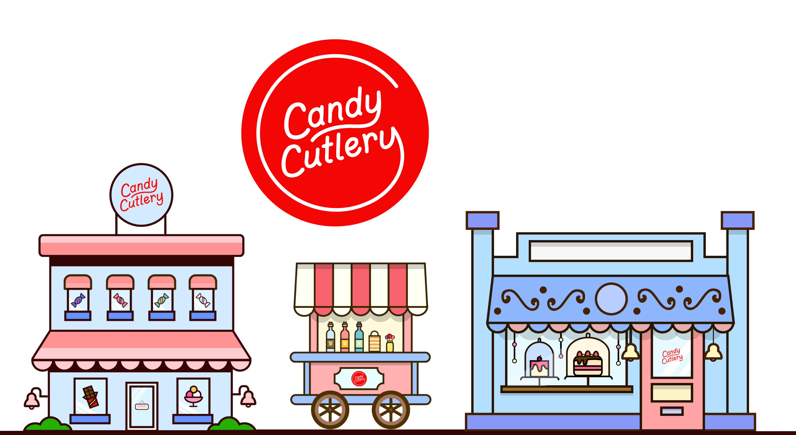
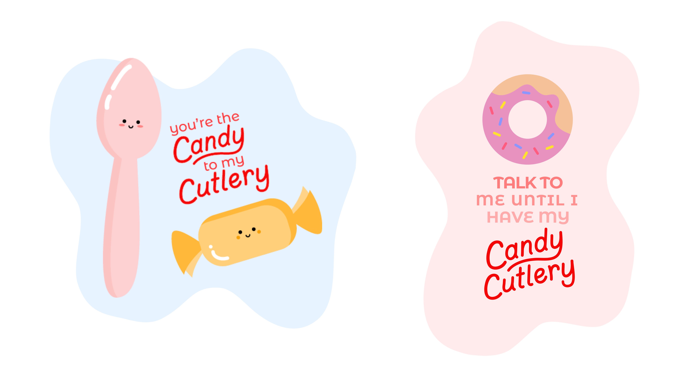
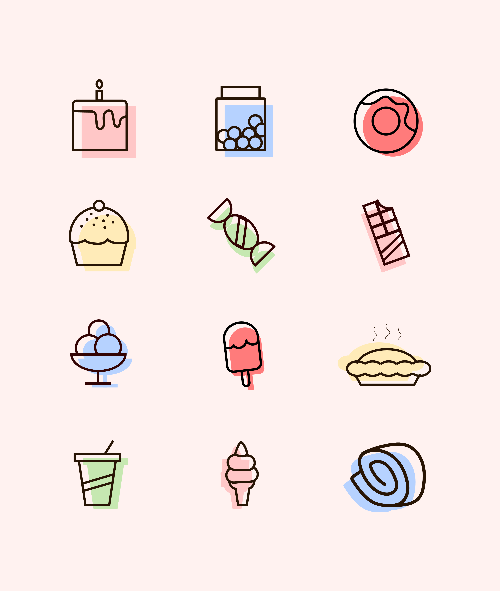
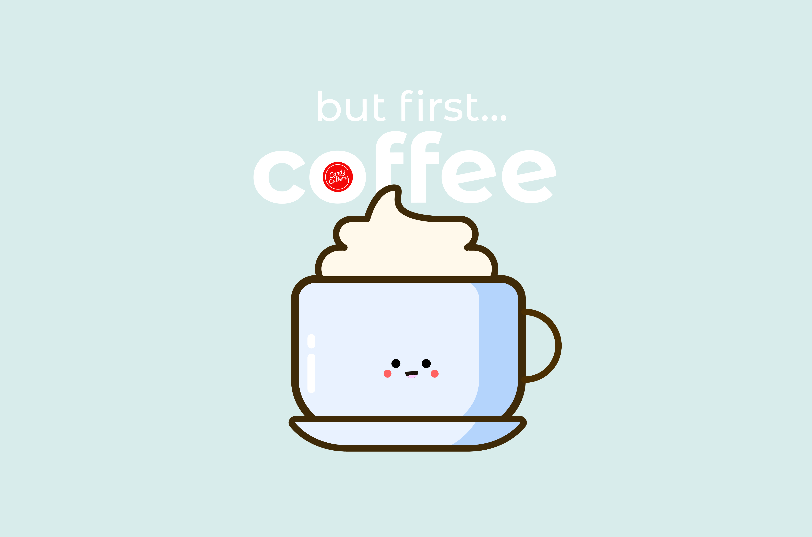

Background
Candy Cutlery is a Canadian company that sells hard candy utensils for consuming your drink or dessert. I partnered with them in December 2018 when their co-founder, Lyn Chen, approached me about doing freelance design work for their upcoming line of Candy Cutlery merchandise.
I was extremely excited to work for Candy Cutlery. They offer such a great eco-friendly alternative to single-use plastic and encourage sustainability in using their products, even topping it off with environmentally-conscious packaging. You can read more about it here.

I took on the project in December 2018. The best part was it gave me lots of creative freedom - I used Adobe Illustrator and Sketch to create over 9 different designs for them to choose from. I designed illustrations and various logos to showcase Candy Cutlery's playful and environmentally-conscious branding nature. I researched their current social media presence, scoured through their brand guide and their website to ensure I aligned my designs according to their branding scheme.
Designs
The Candy Cutlery brand emphasizes a fun, colourful product.



Final Product
This project was for designing Candy Cutlery's first line of merchandise, "Sweet Merch" just in time for the holidays, sold using their online Shopify store. Once I finalized the illustrations with the founders of Candy Cutlery, I experimented with colouring and styles of apparel, accessories, and lifestyle products. Take a look at my designs for "Sweet Merch" available on their website.